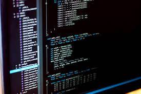
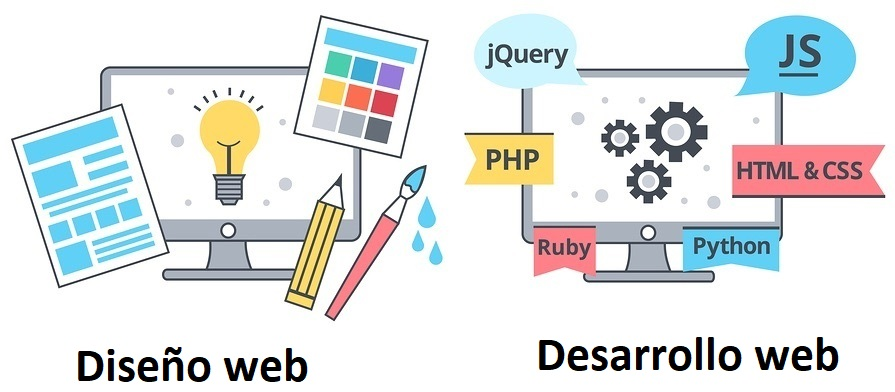
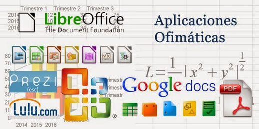

Descripción de las asignaturas
Programacion y base de datos

La programación es la que se encarga de la creación de softwares mediante lenguajes de programación.
La base de datos son las encargadas de alamacenar y guaradar grandes cantidades de información y poderlas utilizar mas adelante.
Sistemas operativos y redes

Los Sistemas Operativos es el software (programa) más esencial que se ejecuta en un computador, nos permite usarlo y darle órdenes para que haga lo que necesitamos.
Las Redes son las encargadas de mantener conectado a todo el mundo, se encarga de trasmitir información de un lugar a otro.
Soporte Técnico
Rama que brinda servicio mediante una persona a los clientes que se les presento un problema físico o a nivel de software en el ordenador.
Diseño y desarrollo web

El Diseño web: crea la apariencia de una página web, como el diseño gráfico, forma de navegación, color,etc. Permiten una navegación fácil y sencilla. Desarrollo web: crea la parte interna de una web como son los contenidos, base de datos, etc; esto es lo que permite la interacción de una web con quienes la visitan.
Aplicaciones Ofimáticas y en línea

Aquellas aplicaciones que utilizamos para llevar a cabo las tareas informáticas, como: Word, Excel, Power Point, y otras aplicaciones, en esta aprenderas todos los usos que nos puede brindar en nuestra vida diaria y las funciones que tiene cada uno.
Formación Oriental y Laboral
En esta asignatura aprenderas acerca del ámbito laboral que te afrontoras en un futuro empleo.